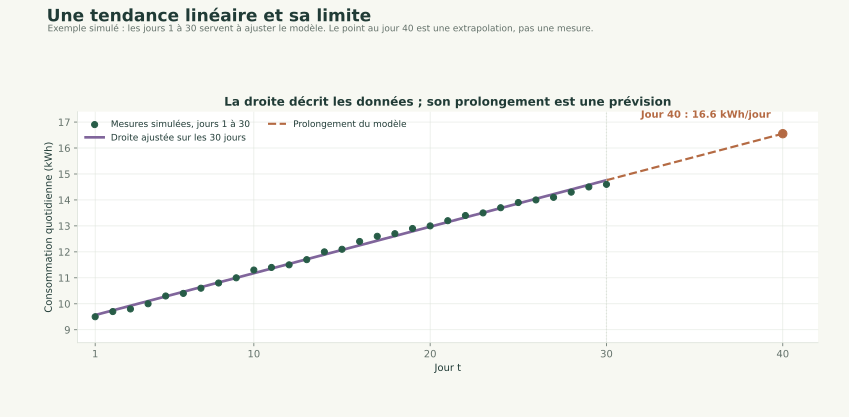
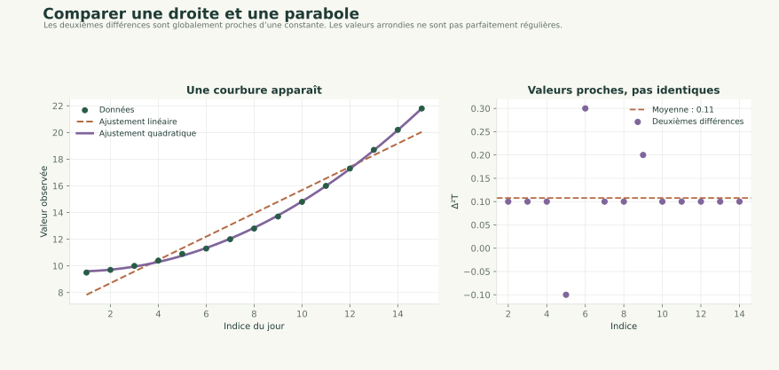
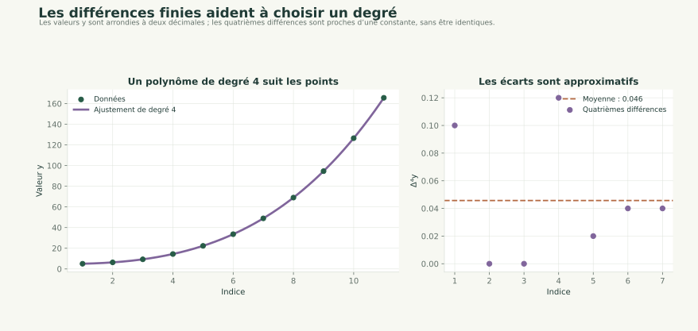
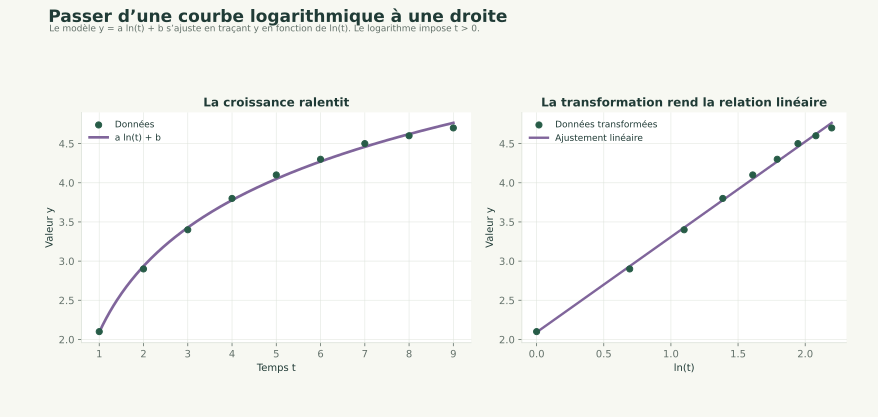

Application 01 / 8
Exercice 1
Voici un autre exercice, identique dans l'esprit, toujours basé sur une régression linéaire simple, mais avec un contexte différent et des données réalistes.
Prêt à l'emploi pour un TP ou un notebook.
Des bases à la modélisation
Passer des mesures à une prévision et l’interpréter.
Application 01 / 8
Voici un autre exercice, identique dans l'esprit, toujours basé sur une régression linéaire simple, mais avec un contexte différent et des données réalistes.
Prêt à l'emploi pour un TP ou un notebook.
Application 02 / 8
C = np.array([
9.5, 9.7, 9.8, 10.0, 10.3, 10.4, 10.6, 10.8,
11.0, 11.3, 11.4, 11.5, 11.7, 12.0, 12.1, 12.4,
12.6, 12.7, 12.9, 13.0, 13.2, 13.4, 13.5, 13.7,
13.9, 14.0, 14.1, 14.3, 14.5, 14.6
])
Ces valeurs illustrent un scénario fictif de consommation quotidienne ; elles ne proviennent pas d'un relevé réel.
On associe à chaque valeur un jour t = 1, 2, ..., 30.
Application 03 / 8
Application 04 / 8
Chercher :
en utilisant :
a, b = np.polyfit(t, C, 1)
Application 05 / 8
Application 06 / 8
a en kWh/jour ?b ?Application 07 / 8

Application 08 / 8
Si les écarts ne sont pas constant entre les données alors le modèle n'est pas linéaire ...
Que pouvez-vous dire des données suivantes ?
T = np.array([
9.5, 9.7, 10.0, 10.4, 10.9, 11.3, 12.0, 12.8,
13.7, 14.8, 16.0, 17.3, 18.7, 20.2, 21.8
])

Utilisez la méthode np.diff sur ces données et concluez.
Puis on vous aidant de la méthode np.polyfit trouvez un modèle qui décrit les données.
Pour déternimer si un jeu de données suit un modèle d'ordre k vous pouvez utiliser le tableau suivant, y le jeu de données.
Remarque importante : attention au "zéro informatique"
Si vous obtenez des valeurs très petites comme 1e-14, −3e-15, etc., cela correspond en fait à 0 (à l'erreur machine près)
| Différences | Interprétation |
|---|---|
np.diff(y) ≈ constant |
→ polynôme de degré 1 |
np.diff(y,2) ≈ constant |
→ polynôme de degré 2 |
np.diff(y,3) ≈ constant |
→ polynôme de degré 3 |
np.diff(y,4) ≈ constant |
→ polynôme de degré 4 |
| ... | ... |
Que dire de ces données ? Étudiez leurs différences successives et trouvez un modèle polynomial qui les décrit au mieux.
y = np.array([
5.00, 6.32, 9.28, 14.40, 22.30,
33.60, 48.92, 69.00, 94.60,126.52,
165.60
])

Représentez ces données et trouvez un modèle qui convient pour les décrire.
Pour ajuster un modèle logarithmique aux données, il suffit de transformer le temps en
ln(t)et d'appliquer une régression linéaire : si la croissance ralentit régulièrement, le modèley(t) = a,\ln(t) + bdécrit bien le phénomène.
Remarque t X = np.log(t)
t = np.array([1, 2, 3, 4, 5, 6, 7, 8, 9])
y = np.array([2.1, 2.9, 3.4, 3.8, 4.1, 4.3, 4.5, 4.6, 4.7])

Vous avez parcouru ce chapitre.
Matrices et vecteurs propres →Les corrections s’ouvrent en cliquant sur « Afficher la correction ».